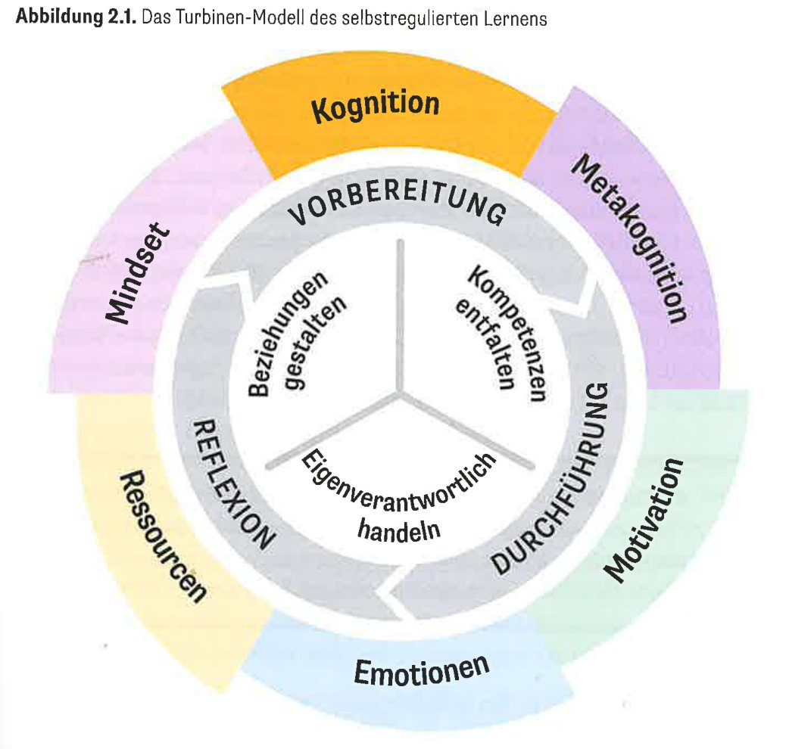
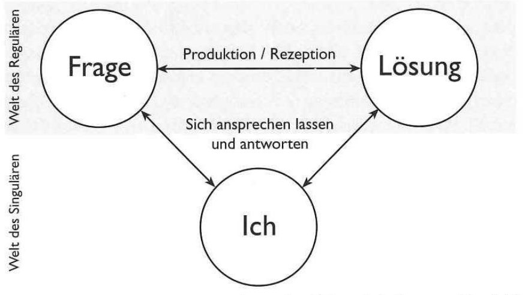

What does research say? Theories and concepts, connections, tensions and options for action in practice.
What it’s about
Learners in a class are never all in the same place. Individual learning support means making thinking paths and learning conditions visible, adapting support to them and checking whether learners are making progress in the subject and in their self-regulation.
This page connects key theories – from Vygotsky’s zone of proximal development to scaffolding, feedback and self-regulated learning – with conversation models, tools and a planning check. You can work through it from top to bottom or jump to specific sections via the table of contents.
The reflex is to explain right away or show the solution. Research on learning support recommends an intermediate step: understand first, then dose the help appropriately.
Where exactly are they stuck? Content, strategy, motivation, emotion or environment? → Diagnosis
3
What is the smallest help that moves them forward?→ Scaffolding
Guiding idea
Individual learning support makes thinking paths and learning conditions visible, adapts support to them and checks whether learners are making progress in the subject and in their self-regulation.
How to read this page
The page is divided into four parts: A What is it? · B What do I need to understand? · C How do I proceed? · D Where does it get difficult? You can jump to any section via the table of contents.
TheoryLine of thoughtTensionPractice
All statements are based on the sources listed in the references. Notes marked “own synthesis” combine several sources. Original figures are marked as figure citations and discussed in the text; all other graphics are my own illustrations, created with the help of Claude.ai or ChatGPT. Quotations from German-language sources have been translated into English.
Overview
How the concepts fit together
The theories come from different traditions: developmental psychology, research on teaching and learning, special education, counseling and constructivist didactics. But they interlock. Click on a concept to jump straight to it.
Own illustration.
AWhat is it?Definition, phases and characteristics of learning process support
A · Definition
Learning process support: one phase of the whole learning process
Learning support happens wherever people learn from others. In school, it refers to a specific phase embedded in a complete learning process (Fraefel, 2018, p. 126).
initiateproblem, input, learning goal, activity
supportfeedback, help with the content, hints on how to proceed, teaching strategies
phase out / evaluatenew challenges, assessment
Own illustration based on Fraefel, 2018, p. 126.
Framework
The typical course resembles an apprenticeship (cognitive apprenticeship; Collins, Brown & Newman, 1989): at first, a lot is modeled and supported; as familiarity grows, less and less direct support is needed.Fraefel, 2018, p. 126
Who closes the gap?
Learners can increase their effort and use more effective strategies. Possible but undesirable: watering down or abandoning goals. Teachers can set suitable, challenging goals and support learners with feedback and strategies.Fraefel, 2018, p. 126
Line of thought
Learning support has one goal: to make itself unnecessary. Karlen uses an image for this: at the beginning of the learning journey, a pilot is needed; over time, the learners take the helm themselves.Karlen, 2026, p. 16
A · Characteristics
Four characteristics of good learning process support
Urban Fraefel describes four characteristics. Together, they explain why learning support is demanding and why it must be possible in every form of teaching.
1
individualized
Learners have different prerequisites and each need different support. This makes support much harder with the whole class at once.
2
scaffolds & feedback
Teachers provide support with scaffolds that bridge the gap between current ability and the learning goal.
3
requires diagnosis
Helpful scaffolds require good knowledge of current learning processes: they must fit the learner’s level, difficulties and needs.
4
independent of method
Good support is possible with any method, from direct instruction to open formats, as long as individual interactions can take place.
Fraefel, 2018, pp. 128–129
Line of thought · What follows from characteristic 4?
Whether learners receive support is not determined by the teaching format. A weekly plan or learning studio is not yet learning support, and teacher-led input does not rule it out. What matters is whether time and opportunity for individual interaction are planned. → SRL is not SOL
[Scaffolds are] supports that help students bridge the gap between their current abilities and the intended learning goals.Fraefel, 2018, p. 128 (cf. Wood, Bruner & Ross, 1976)
BWhat do I need to understand?Theories and concepts that underpin learning support
B · Framework theory
Knowledge first emerges socially: the zone of proximal development
Lev Vygotsky (1896–1934) observed that everything in a child’s development happens first on the social level before it takes shape internally. Higher mental functions are based on real relationships between people (Fraefel, 2018, p. 127).
Figure citation · Fraefel (2018), Lernprozesse begleiten, Fig. 9, p. 127 (based on Vygotsky & Cole 1934/1978; Tharp & Gallimore 1991; Fraefel 2007). The labels in the figure are in German.
What is the ZPD?
The zone of proximal development, also called the “learning window,” is the distance between what someone can achieve alone and what they can master with guidance or with more capable peers. For a while, learners and more advanced others act together.Fraefel, 2018, p. 127, based on Vygotsky & Cole (1934/1978, p. 86)
Line of thought
The ZPD is not a characteristic of the person; it describes the relationship between person, task and available help. The same task can mean “consolidating” for one person and be “too difficult” for another. Help only works in the gray area.
The four areas of the figure
Already learnedrefresh · no help needed
Consolidatingautomate · achievable with self-help or little help
Challenging new goalsachievable with help from others: teacher, parents, peers
Goals that are too difficultnot achievable even with help
Practice · lower and upper secondary
When working through a demanding text, one person needs a clarification of terms, another a hint about the structure, and a third is already ready for a transfer task. Older learners, too, may need close guidance in a new subject area.SitKo workshop guide, p. 4 (own synthesis)
B · Individual learning windows
One class, many learning windows
Figure citation · Fraefel (2018), Lernprozesse begleiten, Fig. 10, p. 128. Each row is one learner; the gray area is their learning window for the same competence. The dashed rectangle represents support aimed at the whole group.
Whatever the teacher does, they will only reach some of the learners […].Fraefel, 2018, p. 128
Adaptive teaching
Helmke & Weinert (1997) call adaptive teaching “the most promising instructional concept” for responding to large, stable differences between learners. Adaptivity comes from how teaching is organized (e.g., learning stations, work plans) or from situational adjustment in the moment.Leuchter & Schwerzmann Humbel, in Berner, Fraefel & Zumsteg, 2018, p. 134
Line of thought · three conclusions
1
Individualizing means responding to the learner’s current level. It is not a label for a teaching format.
2
If you want to act adaptively, you first need to know where someone stands.
3
Planning needs time slots for one-on-one interaction and tasks for everyone else.
Guiding question for planning
Whom does my planned help reach, and who needs a different prompt? Describe two learners with different prior knowledge and design a form of support for each of them.SitKo workshop guide, p. 3
B · Scaffolding
Promote, support, let go
A scaffold only makes sense as long as the building needs it. Support should make the challenge manageable without taking over the thinking, and it is withdrawn as confidence grows.
Own illustration.
What scaffolding includes
Structuring that reduces complexity
Prompts that focus attention on important aspects
Thought-provoking prompts, pointing out unresolved questions and contradictions
Encouraging learners to share and test their assumptions
Asking learners to justify statements and reflect on their learning paths
Summarizing and highlighting important contributions
Möller (2006), in Berner, Fraefel & Zumsteg, 2018, p. 137
The teacher should offer as much help as necessary and as little help as possible […].Möller (2006) based on Reiser (2004), in Berner, Fraefel & Zumsteg, 2018, p. 137
Tension
Möller considers it naive to believe that doing and experimenting alone lead to understood knowledge. Open, discovery-based forms of learning only succeed with appropriate support (p. 137).
Practice · grading support (own synthesis)
Prepare three to four forms of help for the same task, from small to large. Offer the smallest one first.
1
Follow-up question
“What have you tried so far?”
2
Focus or strategy hint
“Look at section 2 first.”
3
Model a sub-step
demonstrate while thinking aloud
4
Solve it together
then a similar task alone
Check question: How do I know that a form of help can be withdrawn?
based on SitKo workshop guide, pp. 4 and 11; Möller (2006)
B · Diagnosis and support
Understand before we help
Tönnissen, Link, Hengartner & Hagmann-von Arx (2024) observed in teacher education that the diagnostic process was often skipped, moving straight to support. Their answer is a cycle in the shape of a “figure eight lying on its side.”
Diagnostic cycle
Question, possibly a hypothesis
Choose methods
Apply, evaluate
Answer the question
Interpret in light of theory
Support cycle
Prioritize development needs
Formulate goals
Derive measures for the person and for teaching
Plan support
Implement
Evaluate the effect → back to diagnosis
Own simplified illustration based on the diagnosis–support cycle (Tönnissen et al., 2024, pp. 304–307). The original figure is not reproduced.
Fit instead of deficit
Learning and behavioral difficulties are understood as a problem of fit between individual prerequisites, activity and participation, and environmental factors (e.g., quality of teaching).Tönnissen et al., 2024, p. 305
Two support strategies
remedial: directly build up missing prerequisites in the person compensatory: adapt teaching to the learner’s needsbased on Trautmann & Wischer (2007), in Tönnissen et al., 2024, p. 307
… also the quiet ones, the withdrawn, the anxious […], who may also be under great strain but often receive little attention …Ahrbeck (2022, p. 260), quoted in Tönnissen et al., 2024, p. 310
Transfer to regular classrooms
The model comes from special education and does not replace specialized assessment. As a way of thinking, however, it helps: first formulate a question, then observe; ask not only “What is the child lacking?” but also “What does the teaching make difficult?”
The authors’ own critique
The model appears linear. In practice, you jump back, and learners can be at different points for different aspects (p. 310).
Practice
Observation is considered the “supreme discipline” of diagnostics (p. 306). It is part of every pedagogical action.
B · Formative assessment
Finding out the learning level without testing
Assessment only becomes formative when this information is used to improve teaching for the benefit of the students.Fraefel, 2023, p. 138, based on Black & Wiliam (1998)
Line of thought
Formative is not a method but a use. Information about the learning level that has no consequence is just data collection. Therefore: only ask if time for a response is planned.
A spectrum: from informal to graded
A · informal
conversations, observation, looking at productsalways · for the learners
B · surveying the class
short written surveys (CATs)as needed · for the teacher
C · ungraded testing
tests, products, demonstrated competenciesseveral times per unit
D · graded testing
formal, under fair conditionsat most once per unit
A and B: formative assessment of process and progress · C and D: summative assessment. Own simplified illustration based on Fraefel, 2023, Table 8, p. 137 (adapted from Dolin et al., 2017).
✗ What usually doesn’t work
“Did you all understand that?” Learners often don’t even know what they haven’t understood.
Raising hands, traffic lights, thumbs: minimal binary information, a vague snapshot of the mood.
Checkbox questionnaires: statistics without a clear consequence.
Short quizzes: feel like exams and create pressure.
Fraefel, 2023, p. 139
What provides meaningful information
“Assessment on the fly”: observing, asking follow-up questions, looking at products
The muddiest point: “What was the most confusing point in this lesson?” (written, short)
Not in exam mode: self-assessment of understanding and difficulties
Anonymous mailbox for concerns, praise, wishes
Fraefel, 2023, pp. 138–140 (CATs based on Angelo & Cross, 1993)
Dilemma for new teachers
Feedback from the class may require immediately adjusting pace, approach or explanations. That means more effort and uncertainty. Fraefel advises only asking when there is enough time left to rethink the course of the lesson (p. 140).
B · Feedback
Feedback that enables further learning
Feedback is information about aspects of a person’s performance or understanding, provided by teachers, peers, texts or oneself (Hattie & Timperley, 2007). It is effective when it addresses the right level and asks the right questions (Fraefel, 2018, p. 129).
Where am I going?clarify goals
How am I going?status, problems, progress
Where to next?outlook, next steps
Taskcontent level
Is it clear what is to be done and why?clarify why it is worthwhile
Are they managing the task? Where is the content problem?content correction, hints
How can what was learned be applied or extended?show an application task
Strategiestask-related
Which strategies need to be learned here?discuss why they keep getting stuck
How are strategies applied and optimized?suggest a procedure for self-correction
What does the strategy enable? Next steps?practice on a more demanding problem
Self-regulationmonitor, direct
What steps toward more self-regulation are needed?e.g., actively seeking help
Is appropriate self-regulation succeeding?show why help-seeking fails
What would allow even more independence?find out together
Persononly with a reference!
Does the statement contain information that helps to do better in the future?Praise or criticism without reference to the task or strategy is practically ineffective.
Own simplified illustration based on Fraefel, 2018, Fig. 11, p. 130 (based on Hattie & Timperley, 2007). Dashed: the two fields to which most everyday feedback is limited.
Finding from everyday teaching
Most feedback concerns only two fields: status and problems with the task and personal remarks without informational value. Professional feedback also addresses goals and next steps as well as strategies.Fraefel, 2018, p. 129
Connections
ZPD: Feedback shows the next achievable step.
SRL: The “self-regulation” row is the bridge to the turbine.
Formative: Feedback only works once it can be used.
Exercise
Assign one of your own feedback comments to a field. Add a verifiable next step and an opportunity to put it into practice.SitKo workshop guide, p. 5
An example: from comment to continued work
A student (lower/upper secondary) has handed in the first draft of an argumentative essay. The arguments are good but simply listed without connections. This is how feedback can sound on the different levels (own examples for the matrix):
Typical, not very helpful
“Well done, but still a bit messy.”
Person and task are mixed up; no information about what is messy and how it can be improved.
Task
“Your three arguments are correct. What’s missing are transitions that show how they are connected.”
Strategy
“Highlight the key sentence in each paragraph and write next to it: supports, contradicts, adds?”
Self-regulation
“In your next text, how will you notice yourself whether the common thread holds?”
The further to the right, the more responsibility stays with the learner.
Praise strategies, not talent
Positive, process-oriented feedback (“You chose a good strategy”) strengthens self-efficacy in applying strategies.Karlen & Mejeh, 2026, pp. 58–59
Developmental perspective
In the learning journal, Ruf & Gallin give feedback with check marks: ✓ met, ✓✓ independent, personal achievement, ✓✓✓ a real “hit.” If something doesn’t work out, there is a second chance.Ruf & Gallin, 2011, pp. 46–47
Checklist for every piece of feedback
Does the person know where they stand?
Do they know what to do next?
Do they have time and opportunity to use it?
Does it concern the task, strategy or self-regulation, not just the person?
B · Self-regulated learning
Self-regulation needs support
Definition“Self-regulated learning refers to the ability to take various preparatory, monitoring and controlling measures, depending on the learning situation and task, in order to achieve the desired goals with the help of suitable strategies.”Karlen & Mejeh, 2026, p. 43

Figure citation · Karlen & Mejeh (2026), Fig. 2.1: The turbine model of self-regulated learning, p. 43 (adapted from Karlen & Held, 2025). In: Karlen, Y. (Ed.), Gewusst wie! The labels in the figure are in German.
How the turbine is structured
1
Three phases (inner ring, based on Zimmerman, 2000): forethought → performance → reflection
2
Six competence aspects (outer ring): cognition, metacognition, motivation, emotions, resources, mindset, all equally central
3
Goal (center): experiencing oneself as effective, shaping relationships, acting responsibly
Karlen & Mejeh, 2026, pp. 42–46
Line of thought
Cognition and metacognition alone do not explain success or failure. When someone “isn’t getting anywhere,” the cause may also lie in emotions (fear of failure), in resources (noise, phone, no time) or in their mindset (“I’m just not good at math”). The turbine is therefore also a diagnostic grid.
Three phases, three support questions
Forethoughtanalyze the task, activate prior knowledge, set a goal, choose a strategy, organize time and place, get in the right frame of mind“What’s your plan?”
Performanceapply strategies, monitor progress, stay focused, regulate frustration and overload, seek help“How can you tell it’s working?”
ReflectionGoal achieved? Which strategies helped? Attribute causes, draw conclusions for next time“What will you do the same next time?”
Own illustration based on Karlen & Mejeh, 2026, pp. 48–52 and Tables 2.1–2.2; support questions: own wording.
Attribution: the hidden engine
Those who attribute success to their own effort and effective strategies (“I prepared well”) develop higher self-efficacy (Weiner, 1986). In reflection, it is therefore worth asking why.Karlen & Mejeh, 2026, pp. 51–52
Three forms of strategy knowledge
declarative: what a strategy is procedural: how to apply it conditional: when and why it makes sense This also requires strategy motivation: self-efficacy and the conviction that it helps.Karlen & Mejeh, 2026, pp. 56–58 (Pressley et al., 1987)
Building strategies deliberately
introduce step by step and model them
practice with subject content, make the benefit visible
involve learners in choosing strategies
explicitly discuss transfer to other tasks
Karlen & Mejeh, 2026, pp. 56–59
B · Barriers to strategy use
“She just doesn’t use the strategy.” Why not?
Karlen & Mejeh distinguish three typical barriers. From the outside, they all look like the same behavior, but each requires different help. Try the decision tree with a specific case from your own teaching.
Does the strategy work when you explain it and explicitly ask her to use it?
Works when prompted: yes
Why doesn’t she use the strategy on her own?
Mediation deficiency
Necessary knowledge or a basic skill is missing, so even a well-meant explanation has no effect. Example: She highlights everything because she cannot yet tell what is important from what is not.
Help: clarify prior knowledge, explain in detail, model, practice together.
Production deficiency
She knows and masters the strategy but only uses it when prompted. Often she doesn’t think of it or doesn’t see the benefit in the specific situation. Example: self-explanations only when explicitly requested.
She knows the strategy and its benefits, but the effort seems too great. She prefers more convenient, less effective methods. Example: rereading the text instead of formulating her own questions about it.
Help: let her experience and reflect on the benefit with a concrete task, make getting started easier.
Own illustration as a decision tree based on Karlen & Mejeh, 2026, pp. 64–65.
Line of thought
Immediately “explaining it again” only helps with a mediation deficiency. With a utilization deficiency, more explanation tends to reinforce the impression that the strategy is a lot of work.
Guiding question
Is understanding missing, is independent use missing, or is the willingness to invest the effort missing? The best way to find out is to ask the learner directly.SitKo workshop guide, p. 7
B · Checking common assumptions
Four assumptions and what research says about them
Click on an assumption to see what the sources say about it.
“We have a learning studio, so they learn in a self-regulated way.”Is that true?
SOL is not SRL. Self-organized learning is a teaching format with room for choice. SRL refers to the competencies needed to learn successfully in it and in traditional teaching.Karlen & Mejeh, 2026, p. 44
“She gets good grades, so she knows how to learn.”Is that true?
Academic success is not a reliable indicator that someone has learned how to learn. Some know how to pass exams but not how to acquire knowledge in the long term. They stumble at transitions at the latest.Karlen, 2026, introduction, pp. 14–15
“That comes naturally with age.”Is that true?
At the transition to secondary school, strategy use sometimes even decreases, although strategy knowledge grows. For upper secondary, the findings are mixed. Targeted teaching, however, does promote SRL.Karlen & Mejeh, 2026, pp. 66–67
“You just have to give them freedom.”Is that true?
High demands on self-organization without strategy support do not strengthen self-regulation; instead, they create frustration with learning.Karlen, 2026, introduction, p. 17
Promoting SRL holistically
Learning support begins with diagnosing SRL competencies and shows in strategy prompts, scaffolding and individual feedback. Individual teachers can always start with the inner circles, even if there is no school-wide concept yet.Karlen, 2026, pp. 15–16
Graphic: own illustration based on Karlen, 2026, Fig. E.1, p. 16.
B · Dialogic learning
Making thinking visible: the world of the singular

Figure citation · Ruf & Gallin (2011), Dialogisches Lernen in Sprache und Mathematik, vol. 1, p. 24. Above, the world of the regular (questions and solutions of experts); below, the world of the singular (the learner’s “I”). The labels in the figure are in German.
What is called for now is not the art of explaining but the art of listening.Ruf & Gallin, 2011, p. 24
Core idea
The first focus is on what happens between the learner and the subject matter: prior knowledge, questions, ideas, first attempts. The teacher sets aside their expert knowledge for the time being. Only through exchange do the singular positions gradually approach the regularities of the subject.Ruf & Gallin, 2011, pp. 24–25
Distance: deficit or opportunity?
At the beginning, the person and the subject are far apart. Those who want to bridge this distance as quickly as possible devalue the learners’ thinking. Those who use it as a productive tension gain the dynamics of learning from it (p. 24).
Learning traces, not just end products
The learning journal is a workshop: texts are written spontaneously and are not corrected. Paths, detours, questions and strategies become visible. Feedback interprets these traces from a developmental perspective.Ruf & Gallin, 2011, pp. 46–47
Learning-trace questions for a task
What question came up for you?
What did you try?
Where does your thinking get stuck?
What feedback would help you move on?
SitKo workshop guide, p. 10
Connection
The singular is the place of diagnosis: what learners show in their journal or in conversation makes their zone of proximal development visible. Openness at the beginning does not mean giving up subject-related standards.
B · Mindset
Enabling rather than producing
Teachers can instruct, but the learning individual’s process of appropriation follows its own patterns […].Arnold & Schön, 2019, p. 53. Accordingly, humans are “capable of learning, but also unteachable” (ibid., based on Arnold & Siebert, 1995).
Production-oriented didactics
linear, externally organized, predictable
knowledge opened up on the learner’s behalf
planning and controlling teaching steps
teaching, transmitting, leading
reproducing given knowledge
Enabling didactics
non-linear, self-organized, open
knowledge opened up independently
supporting learning projects
accompanying, advising, supporting
constructing reflective knowledge
Own abridged illustration based on Arnold & Schön, 2019, Table 10, p. 54 (based on Arnold & Pätzold, 2002). The comparison is a model for reflection; in practice, there are mixed forms (p. 89).
Competencies of “learning enablers”
Dealing with uncertainty: appropriation dynamics unfold especially in uncertain phases
Openness to outcomes: learning effects cannot be produced with certainty
Learning arrangements: opening up diverse learning paths
Learning support: stepping back, being a resource person
Observer stance: recognizing one’s own distorting interventions
Arnold & Schön, 2019, Table 15, p. 68 (based on Arnold, 2003)
Three basic needs
According to self-determination theory (Deci & Ryan), it is not the organizational format that determines learning success, but whether a setting allows learners to experience competence, autonomy and relatedness.Arnold & Schön, 2019, p. 90
Important
Enabling didactics does not mean “letting things run” either: learners should be able to decide for themselves whether they need detailed instructions. And they need feedback.Arnold & Schön, 2019, p. 90
SPASS: five criteria for lively, sustainable learning
Arnold combines five criteria into a reflection aid for one’s own planning (the German acronym SPASS means “fun”). They are not a recipe or proof of effectiveness, but questions to ask about one’s own offering.
S
self-directed
Learners help determine paths and check results themselves. The teacher is responsible for the process.
P
productive
Prior knowledge is integrated; room for curiosity and changes of perspective.
A
activating
concrete tasks; planning, carrying out and checking solutions independently.
S
situational
connected to the learning group’s situation; practical examples and transfer.
S
social
appreciation, time for questions and feedback, noticing emotions, cooperating.
Own abridged illustration based on Arnold & Schön, 2019, Table 22, p. 108 (based on Arnold, 2012a).
Self-responsibility ≠ handing over responsibility
The teacher gradually hands over didactic decisions but remains responsible for what they offer and checks whether it actually expands the learners’ options for action.Arnold & Schön, 2019, p. 91
Act always so as to increase the number of choices!Heinz von Foerster (1988), quoted in Arnold & Schön, 2019, p. 92
Exercise for your own planning
Choose two criteria that your planning already meets and justify them with a concrete learning activity. Add a third criterion and consider what support it requires.SitKo workshop guide, p. 12
B · What teachers need for this
Learning support is an orchestrated competence
Professional learning support arises from several overlapping areas of competence. What matters is how well the teacher can orchestrate them as needed (Fraefel, 2018, p. 131).
Subject-specific didactic competence
content and structure of the tasks
typical difficulties, time required
a variety of explanation strategies
problem-solving strategies
Diagnostic competence
recognizing the learning level
recognizing learning difficulties
recognizing learning potential
requires subject-specific didactics
Communicative and social competence
psychological knowledge
knowledge about feedback
setting priorities
striking the right “tone”
Competence in learning process support
setting suitable, challenging learning goals
adaptivity; hitting the right level
accurate feedback on tasks and strategies
recognizing the relevant levels
intervening in linguistically appropriate ways
estimating the effect of feedback
Own illustration based on Fraefel, 2018, Fig. 12, p. 131.
Quality standards (Canton of Zurich)
differentiated learning opportunities
individual support: regularly assess learning performance, respond constructively to thinking paths, give differentiated feedback
teamwork, careful transitions between school levels
Bildungsdirektion Kanton Zürich (2017), in Berner, Fraefel & Zumsteg, 2018, p. 136
Line of thought for teacher education
At the start of your career, you can’t do everything at once. It helps to practice one area deliberately, e.g., giving only strategy feedback for a week, and let the others run alongside. Fraefel deliberately calls learning support a complex and demanding activity.
CHow do I proceed?Conversations, action cycle, tools and planning check
C · The learning support conversation
Structuring a learning support conversation: GROW
A solution-focused conversation is not pleasant small talk in which the goal gets lost; it is clearly structured (Kremers & Schlüter, 2018, p. 25). Whitmore’s GROW model divides it into four phases.
G
Goal · clarify the goal
Orientation phase: rapport, time frame, concern
What is your topic? What should be achieved by the end?
R
Reality · current situation
Clarification phase, usually the longest
Where exactly are the problems? What led to them?
O
Options · possibilities
Collect and examine ideas for solutions
What options are there? What speaks for and against each one?
W
Will · action plan
Define concrete next steps
What is the outcome for you? What are your next steps?
Own illustration based on Kremers & Schlüter, 2018, pp. 25–27 (GROW based on Whitmore, 2006).
Who is responsible for what?
Teacher (coach): the process, i.e., space, time, structure, appreciation, a focus on resources and good questions. Learner (coachee): the content: my topic, my goal, my solution, my next step.Kremers & Schlüter, 2018, pp. 9–10
Counseling in five phases
Build a relationship
Specify the concern from the learner’s perspective
Find the level for counseling and solutions
Offer prompts, disrupt habits
Close with a concrete result
Arnold & Schön, 2019, p. 69 (based on Brüggemann et al., 2014). Almost identical to GROW, but emphasizes rapport.
Counseling and grading
Kremers & Schlüter advise keeping counseling and grading separate as far as possible (p. 25). Where the same teacher does both: openly clarify the purpose and use of the information from the conversation. Arnold & Schön: counseling stands in tension with autonomy (p. 69).
Practice · short version in class (3–5 minutes)
G “What do you want to have finished today?” → R “Show me where you are. What have you tried so far?” → O “What could you do now? What else?” → W “What will you do first? When should I check back?” Observation question for practice sessions: Is there an effort to understand first, or does guessing start right away? Is the next step concrete and supported by the learner?own condensed version based on Kremers & Schlüter, 2018; observation question: SitKo workshop guide, p. 9
C · Understanding learning obstacles
What lies behind “I can’t do it”?
Kremers & Schlüter present a learning coaching session with a student who despairs before every test. The self-management process model separates four areas, making it clear that this is not just about study techniques.
1 · Triggering situation
Evening before the test, after 8 p.m. · neighbor playing loud music · brother comes in three times · WhatsApp study group keeps pinging · desk covered with books
2 · Emotion and body
angry at myself · tiredness, burning eyes · despair: where do I start? · used to be proud, now afraid of failing
3 · Cognition (thoughts)
“There’s a huge pile of work.” · “I’ll never manage.” · “It looked easier in class.” · “I won’t stop until I can do it, even if it takes until midnight.”
4 · Strategies so far
copying, covering, reciting · studying only the night before · searching online, videos · WhatsApp group: exchange and distraction at the same time
Own illustration of the case study based on Kremers & Schlüter, 2018, pp. 84–86 (abridged, paraphrased).
Result: her own plan (Will)
phone and computer offline for the first hour
weekly study plan, start earlier, schedule reviews
clear intermediate steps, after which I’m allowed to stop
visualize technical terms instead of copying them
Kremers & Schlüter, 2018, pp. 84–85
Expert on learning ↔ expert on herself
The teacher needs knowledge about learning strategies. At the same time, she should trust the student to choose only those solutions she can realistically and motivatedly implement. If she wants to study in the evening, that is her way (p. 85).
Connection to the SRL turbine
The four fields match exactly the aspects that Karlen & Mejeh emphasize beyond cognition: resources (disruptions), emotions (fear), mindset (“I’ll never manage”) and cognition (ineffective strategies). The conversation is diagnosis and support at the same time.
🌱Principle: strengthen self-efficacy, highlight resources and successes, encourage and take small steps (Kremers & Schlüter, 2018, p. 85).
C · Synthesis
Six steps of learning support
The sources can be condensed into an action cycle (own synthesis, based on the guiding ideas of the SitKo workshop guide, p. 1). It is not a rigid sequence: as with the diagnosis–support cycle, in practice you move back and forth.
1 Understand before we help. Explore prior knowledge, thinking paths, strategy use, resources and barriers; look at the person and the teaching conditions. → Diagnosis
2 Dose support appropriately. Match tasks and help to the ZPD; withdraw them as competence grows. → Scaffolding
3 Turn feedback into continued work. Clarify goal, current level and next step; address the task, approach and self-regulation. → Feedback
4 Build self-regulation explicitly. Support forethought, performance and reflection; include motivation, emotions, resources and mindsets. → SRL
5 Check the effect and adjust. Define observable signs of progress and use the results. → formative
At the center: involve learners. Listen, use learning traces, clarify concerns, agree on steps together. → Dialogue
C · Toolbox
Eight tools for the classroom
Understand
The muddiest point
In writing at the end of a sequence: “What was the most confusing point?” Review the answers and respond to them in the next lesson.Fraefel, 2023, p. 140
Understand
Learning-trace questions
Add to a task: What question came up? What did you try? Where does your thinking get stuck? What feedback would help you?Ruf & Gallin; SitKo guide, p. 10
Dose
Help ladder
Prepare three to four graded forms of help for a core task: follow-up question, hint, modeling, solving together. Always start with the smallest.based on Möller (2006); SitKo guide, p. 4
Dose
Strategy check
If a strategy isn’t being used: mediation, production or utilization deficiency? → Decision treeKarlen & Mejeh, 2026, pp. 64–65
Feedback
Feedback matrix
Assign your own feedback comments to a field. Are goals, outlook or strategies missing? Add a verifiable next step.Fraefel, 2018, p. 130; SitKo guide, p. 5
Self-regulation
Three phase questions
Before: “What’s your plan?” During: “How can you tell it’s working?” After: “What helped, and what will you do the same next time?”based on Karlen & Mejeh, 2026, pp. 48–52
Conversation
GROW in 5 minutes
Goal → current situation → options → next step. The teacher leads the process, the learner the content.Kremers & Schlüter, 2018, pp. 26–27
Conversation
Four-field view
When learners are blocked, note down together: situation, feelings, thoughts, strategies so far. Then look for solutions for each field.Kremers & Schlüter, 2018, p. 86
Caution
Tools do not replace the right mindset. A GROW conversation in which the teacher already knows the goal and just “quizzes” the learner is not coaching. A feedback matrix that never leads to continued work is not formative feedback.
C · Planning check
Checking your own lesson planning for learning support
Eight questions that can be applied directly to a lesson or teaching unit (own synthesis of the sources, from the SitKo workshop guide, p. 11). Check off what your planning already covers: 0 of 8
Connection
Questions 2 and 7 reflect the diagnosis–support cycle, questions 3 and 4 scaffolding and feedback, question 5 the SRL turbine, and question 6 dialogue and enabling didactics.
Tip for practicums
Not all eight questions in every lesson: for each plan, deliberately explore two questions in depth and evaluate them in the debriefing.
DWhere does it get difficult?Tensions that cannot be resolved but can be managed
D · Antinomies in practice
Seven tensions
Learning support moves between poles that are both legitimate. The art lies not in choosing one pole but in finding a balance that fits the situation and can be justified (compilation: own synthesis of the sources). Try it out: think of a specific situation from your teaching and move the slider to where you acted.
helping, supportingletting go
as much as necessary, as little as possible
Help can create dependence. Scaffolds should be faded out (Fraefel); counseling stands in tension with autonomy (Arnold & Schön, p. 69). → Grade forms of help, plan their withdrawal.
the individualthe whole class
What are the others doing while I support one learner?
Help for the group only reaches some of the learning windows (Fraefel, 2018, p. 128), while one-on-one support costs everyone time. → Plan tasks that allow independent work; involve peers as helpers.
singular, openregular, subject norm
value learners’ own thinking and take it further in the subject
Listen instead of correcting right away (Ruf & Gallin, p. 24), without giving up subject-related standards. → First learning trace, then exchange, then consensus (I–you–we).
counselinggrading
trust ↔ assessment mandate
Those who talk openly about difficulties risk a lower grade. Kremers & Schlüter advise separating the two (p. 25); Fraefel distinguishes between formative and graded (2023, p. 137). → Be transparent about roles and how the information will be used.
external directionself-direction
providing structure to make freedom possible
Freedom alone creates frustration with learning (Karlen, 2026, p. 17); in practice, there are always mixed forms (Arnold & Schön, p. 89). → Combine freedom with strategy support; hand over control step by step.
acting immediatelyunderstanding first
pressure to act ↔ diagnosis
Diagnosis is often skipped (Tönnissen et al., p. 304), and feedback from the class calls for immediate adjustment (Fraefel, 2023, p. 140). → One follow-up question before any help; surveys only when there is time to respond.
planningstaying open
plannability ↔ openness to outcomes
Learning cannot be produced (Arnold & Schön, p. 53), and informal diagnosis cannot be planned in detail (Fraefel, 2023, p. 138). → Plan opportunities (time slots, diagnostic windows, graded help), not the effect.
Why “antinomies”?
The tensions are not mistakes that can be eliminated with the right method. They are part of the structure of pedagogical action. Being professional means recognizing them, naming them and justifying decisions, for example in a lesson plan or a mentoring conversation.
Reflection exercise
Choose two axes. What speaks for the position you chose? What would the opposite position have made possible? What would you shift next time, and how would you notice whether it works?
Conclusion
The key points in five sentences
1
Learning happens first through exchange; help only works within the learning window, and that is in a different place for each person.
2
Good help is as small as possible and is withdrawn as soon as it is no longer needed.
3
Feedback works when it clarifies the goal, current level and next step and addresses strategies rather than people.
4
Self-regulation does not come by itself: strategies, motivation, emotions and resources need support.
5
Understand first, then act, then check whether it works, together with the learners.
Questions for me as a teacher
Mindset and responsibility
Where do I strengthen learners’ self-responsibility, and where could I allow more participation?
How do I deal with learners who “offload” responsibility for their learning onto me?
How do I get learners to share their expectations and perspectives openly?
Arnold & Schön, 2019, pp. 92–93
Self-regulated learning
How do I communicate why strategies are an important part of learning?
Which strategies do I use myself, and what does that mean for my role?
How is my “why” of SRL reflected in goals, tasks and feedback?
Karlen, 2026, p. 27
My practice
Which feedback fields do I use often, and which almost never?
When did I last give help without first asking what the learner had already tried?
Which quiet learners did I not notice this week?
own questions based on Fraefel; Tönnissen et al.
“I don’t know what to do. Can you help me?”
Perhaps the most effective first answer is a question: “Show me where you are. What have you tried so far?” With that, diagnosis, relationship and self-regulation all begin at once.
Appendix
References and image credits
Main sources (in German)
Arnold, R. & Schön, M. (2019). Ermöglichungsdidaktik. Ein Lernbuch. Bern: hep.
Fraefel, U. (2023). Erfolgreichen Unterricht planen. Pragmatisch, praktisch, professionell (ch. 10: Bilanzierung und Überprüfung). Münster: Waxmann (UTB).
Fraefel, U. (2018). Lernprozesse begleiten. In H. Berner, U. Fraefel & B. Zumsteg, Didaktisch handeln und denken. Mit Fokus auf angeleitetes und selbstständiges Lernen (ch. 6, pp. 123–138). Bern: hep.
Karlen, Y. (Ed.). (2026). Gewusst wie! Selbstreguliertes Lernen im Schulalltag verankern. Bern: hep. Therein: Karlen, Y., Einleitung (pp. 13–17), and Karlen, Y. & Mejeh, M., ch. 2: Was ist selbstreguliertes Lernen? (pp. 39–67).
Kremers, T. & Schlüter, N. (2018). Coaching in der Schule. Ein Praxisbuch für lösungsorientierte Beratung. Essen: Neue Deutsche Schule Verlagsgesellschaft.
Ruf, U. & Gallin, P. (2011). Dialogisches Lernen in Sprache und Mathematik. Band 1: Austausch unter Ungleichen. Seelze: Kallmeyer/Klett.
Tönnissen, L., Link, P.-C., Hengartner, O. & Hagmann-von Arx, P. (2024). Der Diagnostik-Förder-Kreislauf in der Heil- und Sonderpädagogik. Zeitschrift für Heilpädagogik, 75(7), 303–311.
Cited in the main sources (secondary references)
Black, P. & Wiliam, D. (1998) · Collins, A., Brown, J. S. & Newman, S. E. (1989) · Deci, E. L. & Ryan, R. M. (1993) · Hattie, J. & Timperley, H. (2007). The power of feedback. Review of Educational Research, 77(1), 81–112 · Helmke, A. & Weinert, F. E. (1997) · Möller, K. (2006) · Reiser, B. (2004) · Vygotsky, L. S. & Cole, M. (1978). Mind in society · Whitmore, J. (2006) · Wood, D., Bruner, J. S. & Ross, G. (1976) · Zimmerman, B. J. (2000). Full details can be found in the reference lists of the main sources.
Four original figures are reproduced as figure citations (Art. 25 of the Swiss Copyright Act) with their sources and are discussed in the text: Fraefel, 2018, Figs. 9 and 10; Karlen & Mejeh (2026), Fig. 2.1; Ruf & Gallin (2011), p. 24. All other graphics are my own illustrations, created with the help of Claude.ai or ChatGPT, some of them based on the sources listed. Quotations from German-language sources have been translated into English.